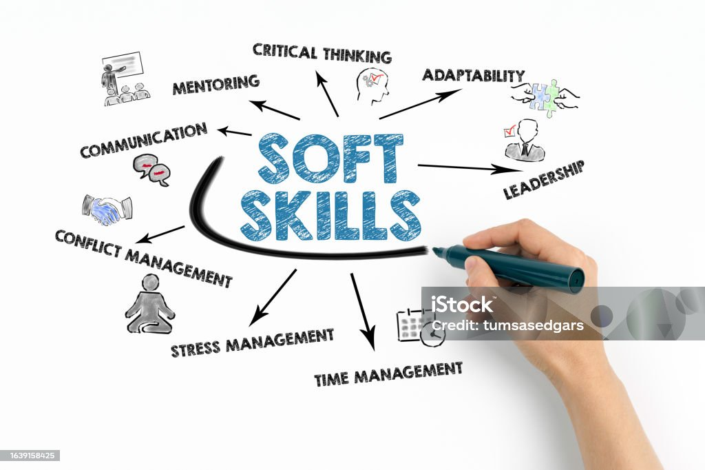

🎨Usa tu creatividad

Descubriendo lo que ya tienes: el verdadero punto de partida
Antes de pensar en grandes inversiones o en lo que te falta, es momento de mirar hacia adentro y reconocer todo lo que ya tienes a tu favor. Muchos emprendedores no inician por esperar el “momento perfecto”, sin darse cuenta de que ya poseen recursos valiosos que pueden convertirse en el punto de partida ideal, como son:
1. Tus habilidades y talentos
Todos tenemos habilidades únicas. Algunas las has desarrollado por necesidad, otras por vocación o por experiencia laboral.
Haz una lista concreta de lo que sabes hacer bien.
Puede ser algo técnico como reparar objetos, cocinar, manejar redes sociales, organizar eventos… o algo humano como saber escuchar, motivar, vender, enseñar, escribir, etc.
2. Tus recursos materiales
No subestimes lo que tienes:
¿Tienes un celular? ¿Acceso a internet? ¿Una computadora, moto, bici, cámara, cocina, herramientas?
Cada uno de esos elementos puede ser parte de tu negocio inicial.
⭐La clave está en ver posibilidades donde otros solo ven limitaciones.
3. Tu historia personal
Tu camino de vida, incluso con sus dificultades, es un capital.
¿Qué retos has superado? ¿Qué has aprendido en el proceso?
Eso te convierte en alguien con experiencia y autoridad en ciertos temas.
💡 Inserta una pequeña actividad aquí:
“Escribe 3 momentos difíciles que superaste y qué aprendiste de ellos. Luego piensa cómo esa experiencia podría servir a otros.”
4. Tu entorno
Mira a tu alrededor. ¿Quiénes te rodean? ¿Tienes amigos que te animan, personas que saben de negocios, vecinos emprendedores, alguien que pueda ayudarte con algo técnico?
⭐Tu red de contactos también es un recurso.
Autoevaluación
El primer paso para emprender con lo que tienes es mirarte a ti mismo con objetividad. Una buena autoevaluación te permite reconocer qué sabes hacer bien, incluso si nunca lo has usado para generar ingresos.
Hazte preguntas como:
¿En qué tareas suelen pedirme ayuda los demás?
¿Qué disfruto hacer incluso sin que me paguen?
¿Qué he aprendido en mis trabajos, estudios o experiencias de vida?
👉 Ejemplo: Si siempre ayudas a tus vecinos con problemas de tecnología, es posible que tengas una habilidad para ofrecer soporte básico o enseñar a usar herramientas digitales.
Habilidades duras y blanda
Tus habilidades se dividen en dos tipos importantes:
💼Habilidades duras: son conocimientos técnicos o específicos.
👉 Ejemplo: saber usar Excel, reparar bicicletas, hacer manualidades, editar videos.
🤝Habilidades blandas: son capacidades personales para relacionarte, adaptarte o resolver problemas.
👉 Ejemplo: ser paciente, trabajar en equipo, comunicarte bien, tener buena organización.
Ambas son valiosas para emprender. No subestimes tus habilidades blandas: muchos negocios triunfan gracias al trato humano y la confianza que generan.
Usa tu creatividad
🎨La creatividad no es solo para artistas. Es la capacidad de ver soluciones diferentes con los recursos que ya tienes. Emprender con lo que tienes exige creatividad para adaptar lo que sabes hacer a las necesidades de otros.🎨
👉 Ejemplo: Si sabes cocinar pero no puedes abrir un restaurante, puedes empezar vendiendo por encargo desde tu casa o enseñando recetas fáciles por internet.